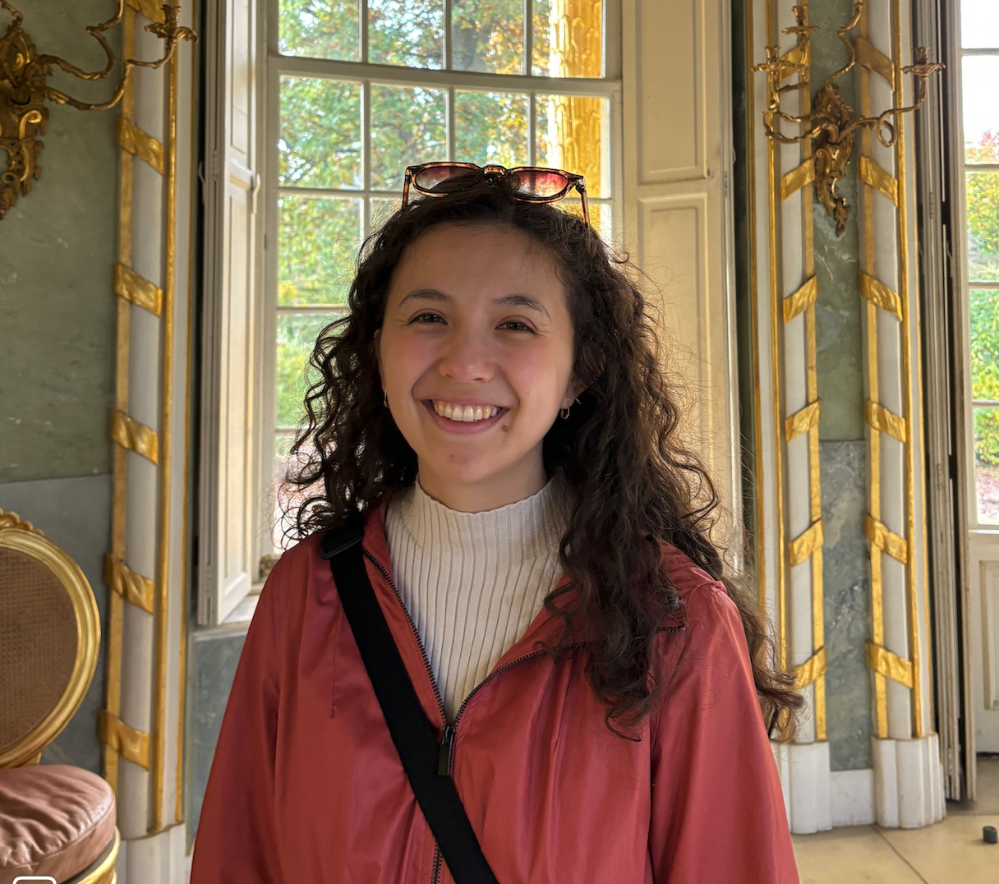

About me:
Currently Model Evaluations Lead at 10a Labs, working on AI safety and security. Experienced in frontier model evaluations, including for EU AI Act. Excited about building tech that makes the world and internet a safer place. On the side, I do digital humanities, mostly on Slavic literature.
Current Positions: